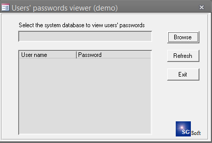

Автор: Serge Gavrilov sgsoft@mail.ru
Users' passwords viewer v1.0 for Microsoft Access 2000. Demo version. SGSoft 23-Aug-2001. (демо версия программы для определения паролей пользователей рабочей группы)

MSA-2000 ( 58 kB)